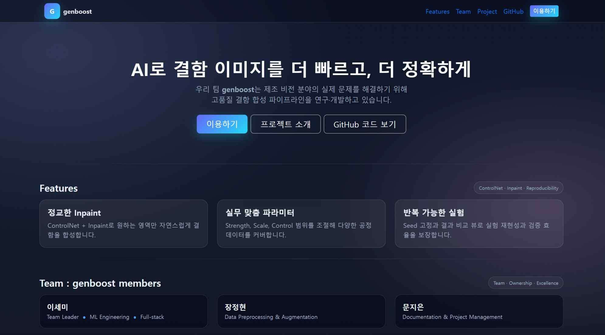

제조 현장에서 결함 이미지를 학습 데이터로 쓰려면 실제 불량이 날 때까지 기다려야 했습니다.
불량률이 낮을수록 데이터는 더 안 모이는데, 검사 모델은 그 데이터로 학습해야 하는 딜레마였습니다.
그래서 실제 결함과 비슷한 이미지를 인위적으로 만들어내는 쪽으로 방향을 잡았습니다.
AI 모델 개발 파트를 맡았고, 요구사항 정의서·서비스 흐름도·화면 설계서·알고리즘 명세서·ERD까지 설계 문서 작업도 같이 했습니다.
Stable Diffusion에 ControlNet과 LoRA를 얹어서 제조 결함 이미지를 생성하는 모델을 만들었습니다.
이걸 Django 백엔드, AWS S3/RDS와 연동해서 생성된 이미지가 바로 서비스에 반영되도록 구성했습니다.
AI 모델이 뱉어내는 결과물이 실제 응용 소프트웨어 쪽 요구사항과 맞지 않아 연동이 꼬였습니다.
서비스 흐름도와 알고리즘 명세서를 기준으로 인터페이스를 다시 정의해서 풀었습니다.
이 과정을 거쳐 장려상을 받았습니다.